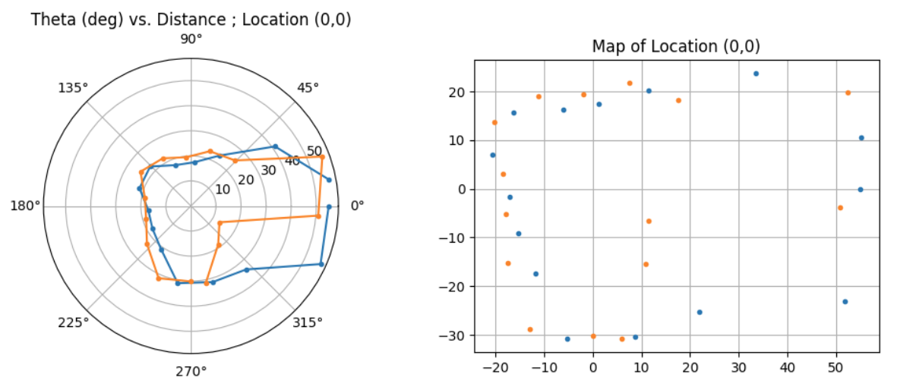
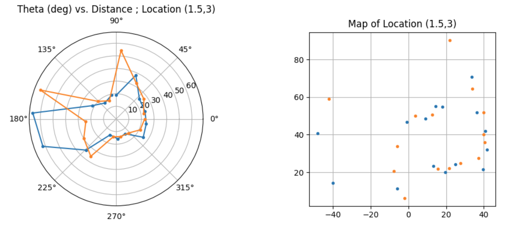
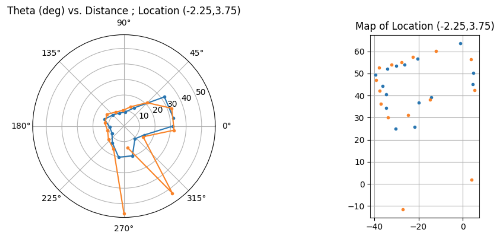
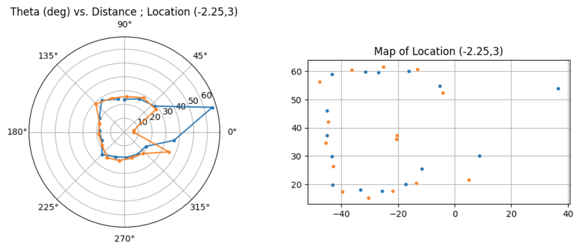
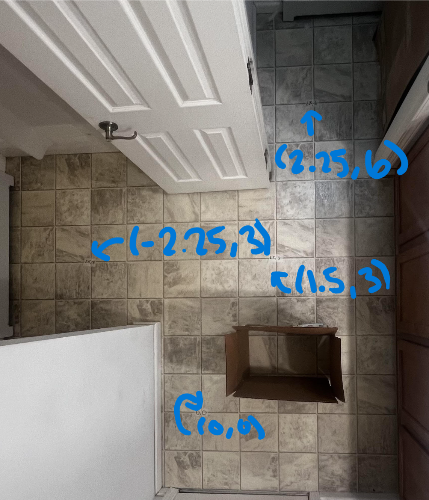
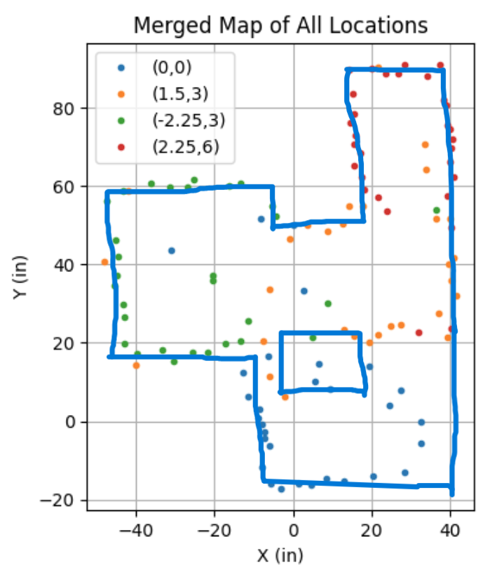

Lab 9: Mapping
In this lab I used orientation control, two ToF sensors, and IMU yaw data to scan my home test area and build a map.
1. Objective
The goal of this lab was to map a static room so that the map could later be used for localization and navigation.
Since I completed this lab at home instead of in the lab space, I used my own measured scan locations rather than the predetermined class coordinates.
I placed the robot at the points (0,0), (1.5,3), (2.25,6), and (-2.25,3),
then rotated it in place and collected distance measurements with my ToF sensors while also logging the robot orientation from the IMU.
The main idea was still the same as the lab: collect a set of angle-distance measurements, sanity check each scan in polar form, transform those points into the room frame, and then combine all the scans into one map of my home test area.
2. Control Strategy
For this lab I chose orientation control. Instead of trying to spin continuously and trust equal angular spacing, I had the robot rotate to a target heading, stop, take the ToF readings, and then move to the next heading. This made the data collection more reliable because the robot was stationary when each reading was taken.
I used about 15 readings total, so each step was roughly 25 degrees. That gave me a full
sweep over the room while keeping the scan routine simple and repeatable.
The robot used the IMU DMP quaternion data to compute yaw, wrapped the angle into the range of
-180° to 180°, and then used a PD controller to rotate to the next target orientation.
Once the error was small enough, the robot stopped, read both ToF sensors, stored the data, and then incremented
the target by 25°.
Angle Wrapping Helper
float wrapAngle180(float angle) {
while (angle > 180.0f) angle -= 360.0f;
while (angle < -180.0f) angle += 360.0f;
return angle;
}3. Arduino Mapping Routine
My mapping routine was built as a dedicated command in the Arduino code. When the command started, the robot entered a loop where it continuously checked Bluetooth, read DMP data from the IMU, waited for both ToF sensors to be ready, and then ran the orientation controller.
Once the robot reached the target heading, it stopped, took one reading from both ToF sensors, stored the yaw and distances, then advanced to the next setpoint. After the scan was complete, the robot sent all logged data back to my computer over BLE.
Stored Mapping Data
void store_mapping_data(int i, float starttime, float distance1_in, float distance2_in, float Gyro_yaw){
time_list[i] = (float)(millis() - starttime);
Tof1_in[i] = distance1_in;
Tof2_in[i] = distance2_in;
if (i == 0) {
Gyro_yaw_list[i] = 0;
}
else {
Gyro_yaw_list[i] = Gyro_yaw;
}
}I used a helper function to save the timestamp, front ToF reading, side ToF reading, and yaw angle into arrays. These arrays were later sent over Bluetooth and used in Python for post-processing.
For the first point I forced the yaw value to zero so the scan started from a clean reference heading.
Core Mapping Controller Logic
if (((data.header & DMP_header_bitmap_Quat6) > 0) &&
(ToF_Sensor_1.checkForDataReady()) &&
(ToF_Sensor_2.checkForDataReady()) && tof_count < 15) {
Gyro_yaw = (float)atan2(t3, t4) * 180.0 / PI + 3.8;
Gyro_yaw = wrapAngle180(Gyro_yaw);
error1P_ori = wrapAngle180(targetOrientation1 - Gyro_yaw);
control_ori = (kp_ori * error1P_ori) + (kd_ori * error1D_ori);
duty2 = fabs(control_ori);
if (fabs(error1P_ori) <= deadband_ori) {
stop_motors();
int distance1 = ToF_Sensor_1.getDistance();
int distance2 = ToF_Sensor_2.getDistance();
distance1_in = distance1 * 0.0393701f;
distance2_in = distance2 * 0.0393701f;
store_mapping_data(i, starttime, distance1_in, distance2_in, Gyro_yaw);
targetOrientation1 = wrapAngle180(targetOrientation1 + 25.0f);
tof_count++;
i++;
delay(1000);
}
}This was the key part of the lab. The robot only logged data once it was within the orientation deadband, which helped reduce bad readings caused by taking measurements while still turning.
4. Why I Used Two ToF Sensors
My robot used two ToF sensors during the scan. One sensor measured what was in front of the robot, and the other measured what was to the side. This let me gather more information at each orientation instead of relying on only one sensor.
Using two sensors made the scan denser and gave me more wall points after transforming everything into the global frame. It also gave me a way to compare whether both sensors were producing measurements that made sense relative to each other.
In the final map, I used both data sets together instead of throwing one away.
5. Python Data Logging and Post-Processing
After each scan, I sent the logged arrays over Bluetooth and saved them into a pandas DataFrame. The table contained time, yaw angle, front sensor readings, and side sensor readings.
Saving the Scan Data
import pandas as pd
def savetocsv_df(loc):
assert isinstance(loc, str)
df = pd.DataFrame()
df["time(s)"] = time_list
df["Angle(deg)"] = Gyro_yaw_list
df["Front(in)"] = Tof_Sensor_1_list
df["Side(in)"] = Tof_Sensor_2_list
df.to_csv("improvedMap_loc_" + loc + ".csv", index=False)
return dfI first checked each scan in polar coordinates. This was a good sanity check because I could quickly tell whether the measurements looked like the room shape I expected from that robot position. If the polar plot looked reasonable, then I moved on to transforming the points into the room frame.
Since the front and side sensors were mounted at different orientations, I used different angle definitions for each one.
The front sensor used the yaw angle directly, while the side sensor used the yaw angle plus 90°.
Transform to the Global Frame
def transform_gbl(rad, d, x0, y0):
x = d * np.cos(rad) + x0
y = d * np.sin(rad) + y0
return x, y
def postProcess(df, x0, y0):
loc = f"({x0},{y0})"
rad_front = -np.deg2rad(df["Angle(deg)"] - 90)
rad_side = -np.deg2rad(df["Angle(deg)"])
distF = df["Front(in)"]
distS = df["Side(in)"]
xf, yf = transform_gbl(rad_front, distF, x0 * 12, y0 * 12)
xs, ys = transform_gbl(rad_side, distS, x0 * 12, y0 * 12)
return pd.concat([pd.Series(xf), pd.Series(xs)], ignore_index=True), \
pd.concat([pd.Series(yf), pd.Series(ys)], ignore_index=True)This transformation moved each local measurement into a fixed room coordinate system. In other words, the robot measured distances relative to itself, and then I shifted those points using the known robot position to express them in the map frame.
Since my scan coordinates were measured in feet, I multiplied x0 and y0 by 12
to convert them into inches before adding them to the transformed points.
6. Polar Plots and Individual Scan Checks at My Home Scan Locations
For each of my home scan locations, I plotted the front and side ToF measurements in polar form first. This helped me check whether
the scan shape looked reasonable before combining it with the rest of the room data. The locations I used were
(0,0), (1.5,3), (2.25,6), and (-2.25,3).
In general, the scans matched what I expected. The major room boundaries appeared where they should, and the overall point shape made sense relative to the robot position. The biggest imperfections came from small turning drift, slight yaw estimation error, and some inconsistency in the ToF readings.
Polar Plot: Location (0,0)

Polar Plot: Location (1.5,3)

Polar Plot: Location (2.25,6)

Polar Plot: Location (-2.25,3)

7. Inertial Frame Plots and Merged Map
After validating the polar plots, I transformed each scan into the inertial reference frame of the room.
This produced point clouds that could be overlaid on one another using the known robot locations from my home setup:
(0,0), (1.5,3), (2.25,6), and (-2.25,3).
Once the scans were merged, the room boundaries became much more clear. At that point I could manually draw the line-based map by estimating where the real walls were from the point distributions.
Single Scan in Room Frame

Merged Scatter Plot

8. Line-Based Map
The final step was to convert the merged scatter plot into a line-based map. I manually estimated the wall locations by drawing line segments over the main clusters of points from my home scans. This simplified the raw scan data into a format that can be used later in simulation.
Since the real data was not perfectly clean, this step also let me correct small errors caused by drift, slight misalignment, or noisy distance measurements. The goal was not to preserve every single point, but instead to capture the actual room geometry well enough for future localization tasks.
Add your final line-map image and the corresponding endpoint lists here.
Example Endpoint Format
x_start = [ ]
y_start = [ ]
x_end = [ ]
y_end = [ ]9. Discussion and Errors
Overall, this lab worked well and I was able to build a room map from multiple scan locations in my home setup rather than the class lab space. The biggest thing that made this possible was using orientation control so the robot could stop before taking each measurement. That made the data much more usable than trying to read the sensors while spinning freely.
The main sources of error were slight drift while turning, imperfections in the yaw estimate, and normal ToF noise. Even if the robot mostly turned on axis, small shifts in position still affected how cleanly the scans lined up after transformation. Also, if the heading estimate was off by even a few degrees, that would slightly rotate the measured points in the global frame.
In the middle of a 4 by 4 meter square room, these angle errors would translate into larger position error as the measured distance increased. So points farther away from the robot would usually show the biggest spread. Even with that, the scans were still accurate enough to identify the walls and create a reasonable line-based map.
If I were to improve this lab further, I would try collecting more scan points, reducing turn-to-turn drift even more, and comparing repeated scans from the same location to measure repeatability.
10. Media
Add your mapping video here showing the robot turning in place, stopping, and collecting measurements.